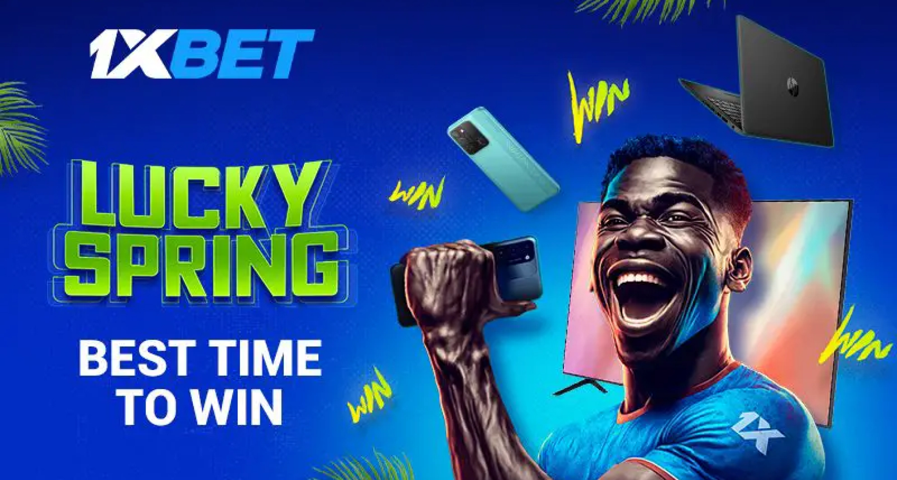

Статья
Хоккей в России – один из самых популярных видов спорта. Для многих это вовсе спорт №1, особенно если учитывать результаты национальной сборной и выступление отечественных хоккеистов в лучшей лиге мира.
НХЛ, правда здесь речь о Ночной хоккейной лиге, подтверждает популярность хоккея. И это при том, что начать занятия не так просто, как в том же футболе. Как минимум, требуются экипировка и ледовая площадка.
Тем не менее, любительский хоккей в стране развивается, во многом за счет Ночной лиги – основному турниру страны среди непрофессиональных игроков.
Содержание
- Что такое Ночная хоккейная лига?
- Как проходит турнир?
- Нюансы правил
- Где смотреть?
- Кто может играть?
- Как участвовать?
- Можно ли делать ставки?
Атлетико Хуракан
Атлетико Хуракан с 30 марта 2024 года не знает поражений, скопив за это время удачную серию из 18 матчей. В крайнем поединке аргентинского чемпионата парни Франка Дарио Куделька несколько недожали, на выезде сыграв вничью с Аргентинос Хуниорс 0:0. Атлетико Хуракан располагается на 1 месте в турнирной таблице, заработав 24 очка, при соотношении голов 12:4. В гонке бомбардиров у «шара» лидирует Пуззетто, в активе которого 5 мячей и передача.
На своей территории клуб провел 6 матчей в чемпионате, добыв в них 4 победы и 2 ничьи.
Что такое Ночная хоккейная лига?
Это турнир среди любительских команд со всех регионов страны. Играть вправе только совершеннолетние спортсмены.
Ночная хоккейная лига разделена на 4 основных дивизиона:
- Любитель 40+;
- Любитель 50+;
- Лига Надежды (любители);
- Лига Мечты (любители и ученики спортшкол).
В первые 7 месяцев существования турнир назывался Российская любительская хоккейная лига. Почему Ночная хоккейная лига так называется сейчас? Это связано со временем поединков. Непосредственно ночью официальные матчи почти не проводятся, хотя иногда заканчиваются после полуночи. В основном, играют и тренируются в темное время суток – ранним утром или поздним вечером. То есть, до или после работы, а также в связи с тем, что в такое время ледовые площадки свободны, да и за аренду платить нужно меньше.
Как проходит турнир?
С сентября по март проходит региональный этап в каждом субъекте России. Региональные представительства устанавливают формат (в 1 или 2 круга, будет ли плей-офф), в зависимости от количества клубов и прочих нюансов. Но обязательно, каждый коллектив проводит минимум 15 игр.
Соперники распределяются по 4 главным дивизионам. Если желающих посоревноваться много, происходит градация по географической принадлежности и/или уровню игры.
Далее, в мае, в течение 2-х недель в Олимпийском парке в Сочи, организовывается Фестиваль хоккея – это решающая часть соревнований. На лед выходят победители региональных первенств.
Около 200 команд делятся на 10 дивизионов, а затем – на группы. Проходит турнир в круговом формате. 8 лучших клубов отправляются в плей-офф, где определяется чемпион дивизиона. Остальные коллективы принимают участие в утешительном плей-офф.
Также Фестиваль предполагает Гала-матч, в котором легенды хоккея играют со сборной Ночной лиги. Первую команду помимо выдающихся хоккеистов, например, Вячеслава Фетисова, Павла Буре, Игоря Ларионова, представляют государственные деятели, звезды шоу-бизнеса и другие известные личности. В составе второй играют региональные представители, лучшие игроки и активисты, которые способствуют развитию хоккея на любительском уровне.
Нюансы правил
Правила матчей в Ночной хоккейной лиге адаптированы к уровню спортсменов и для повышенной безопасности.
Продолжительность матча
Поединок длится 3 периода по 20 минут. В некоторых случаях, продолжительность уменьшается, например, в дивизионе «Любитель 50+». Только если профи играют «чистое» время (таймер останавливается, когда шайба не в игре), то в Ночной лиге «чистое» время фиксируется в таких случаях:
- При удалении;
- Последние 2 минуты встречи при условии, что разница в счете 3 шайбы и менее (здесь еще и фиксируются пробросы).
Особое внимание судьи обращают на задержку игры, когда хоккеист держит шайбу коньком или клюшкой к борту. Если после команды рефери «Играть» спортсмен проигнорировал требование, игра останавливается, а нарушитель получает двухминутный штраф.
Определение победителя
В играх в регулярном сезоне возможна ничья. В таком случае оба соперника зарабатывают по 1 очку.
В плей-офф при ничьей сильнейший выявляется в серии буллитов, которая начинается сразу после матча, без овертайма.
Исключение – финальные встречи в рамках Фестиваля хоккея. С 2024 года, в случае равного счета, играется пятиминутный отрезок чистого времени 3 на 3 до первого гола. Если никому не удалось забросить, начинаются послематчевые буллиты (серии из пяти бросков).
Повышенная безопасность
Нельзя применять силовые приемы.
В дивизионах «Любитель 40+» и «Любитель 50+» запрещен щелчок (слэпшот – бросок с замахом).
Ужесточено наказание агрессора за драку (когда один игрок бьет оппонента, а тот не хочет отвечать и участвовать в потасовке). Хоккеист получает 5+20 и еще 2+2. Его команда останется в меньшинстве сперва на 5 минут (большой штраф – не сгорает в случае пропущенной шайбы), а затем еще на 4 минуты (два малых штрафа, которые заканчиваются при пропущенном голе).
Постепенно арбитры все строже относятся к нарушениям экипировки. Судьи проверяют возраст спортсменов. Если игроку до 20-ти лет, он должен быть в защите шеи и ушей (вставки на шлеме). Также осуществляется проверка, правильно ли застегнут шлем. Все хоккеисты, родившиеся после 31-го декабря 1974 года, обязаны играть как минимум в защитном пластмассовом козырьке или полной пластмассовой маске.
Где смотреть?
Трансляции Ночной лиги осуществляются на официальном сайте и Ютуб-канале.
Перейдите на сайт лиги, в основном меню откройте раздел «Трансляции», выберите регион и при необходимости дивизион, и посмотрите список доступных матчей. Поддерживаются прямые эфиры и просмотр в записи.
Кто может играть?
Участником Ночной хоккейной лиги может стать совершеннолетний любитель. На основе спортивного прошлого, игроки квалифицируются по статусам:
- Мастер – играл за профессиональный клуб или команду мастеров в официальном турнире, в том числе по хоккею с мячом;
- Спортшкольник – выпускник хоккейной школ без профессионального контракта;
- Любитель – остальные спортсмены, не подпадающие под два первых статуса.
Еще есть Лига женского хоккея. Она разделена на дивизионы по спортивному принципу.
Как участвовать?
В первую очередь ознакомьтесь с регламентом лиги, а затем – с документацией чемпионата в своем регионе.
На официальном сайте турнира выберите субъект РФ, чтобы кроме результатов и дополнительной информации, найти контакты регионального представителя. Он ответит на интересующие вопросы, в частности, расскажет, как присоединиться к коллективу или заявиться в турнир.
Для начинающих хоккеистов лучше всего подойдет самый массовый дивизион – Лига Надежды, т.к. выпускники спортшкол здесь не выступают.
Для участия потребуются хотя бы минимальные навыки игры. Обучиться можно самостоятельно, с друзьями, в секции или на индивидуальных занятиях. Будьте готовы выделять достаточное количество времени для тренировок и игр, в зависимости от своей команды. Возможно, придется посещать лед ранним утром, до 7:00, или поздним вечером. Учитывайте рабочий график, потому что поединки в основном проходят в субботу и воскресенье.
Можно ли делать ставки?
Федеральный закон от 31.07.2020 №270-ФЗ разрешает делать ставки только на официальные спортивные состязания, организованные общероссийскими спортивными федерациями и профессиональными спортивными лигами
Ночная хоккейная лига – любительская, так что ставьте на КХЛ, ВХЛ, МХЛ, чемпионаты других стран и международные турниры. Букмекеры предлагают много разнообразных соревнований и ставок.